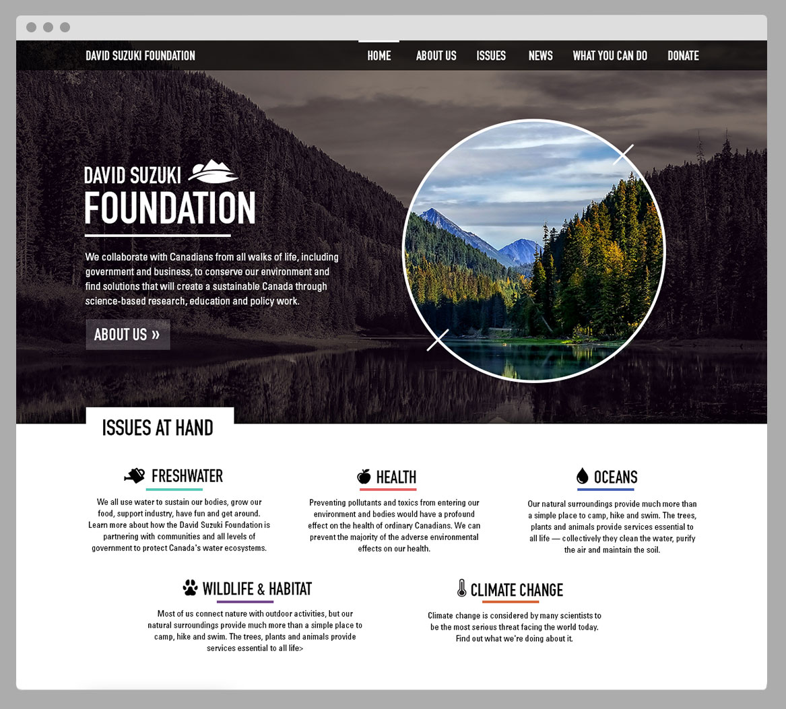
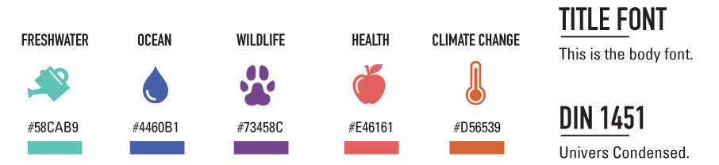
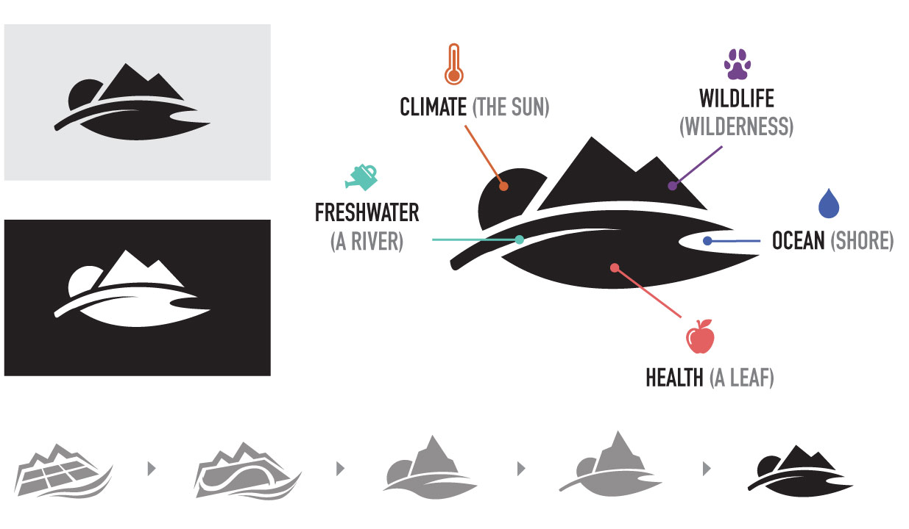
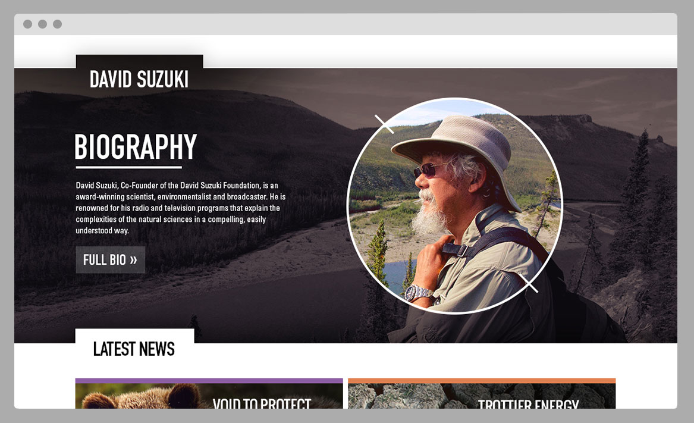
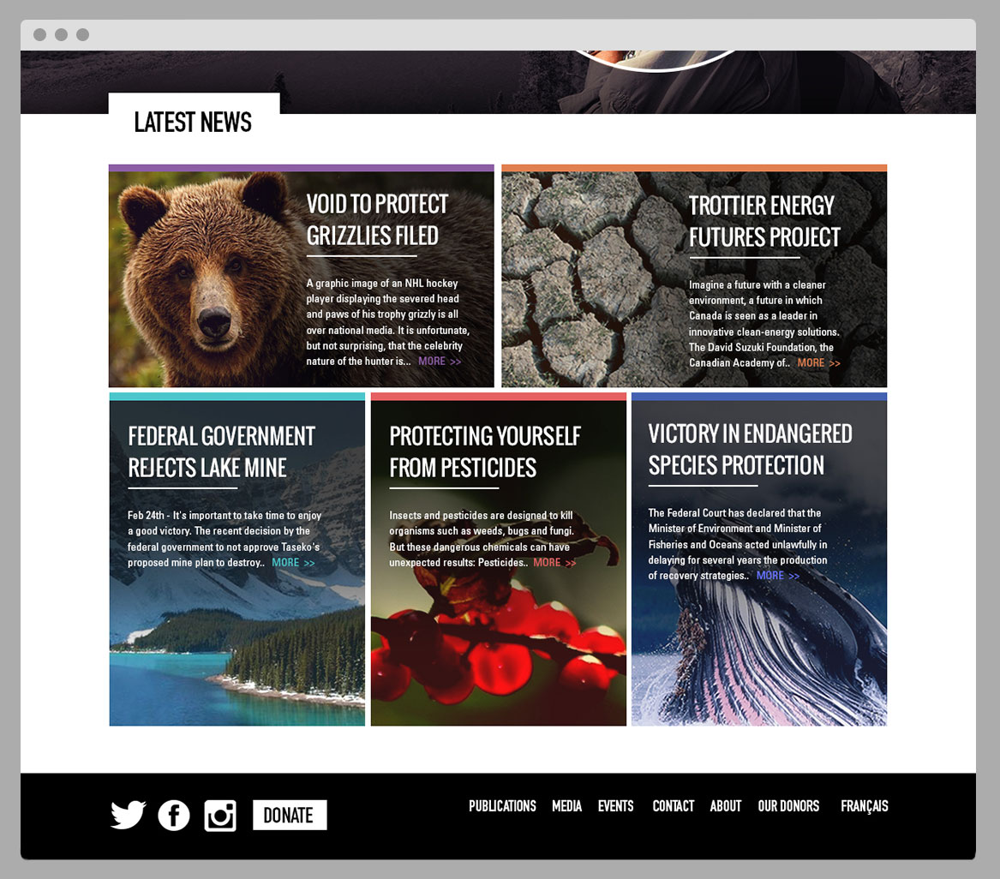

DAVID SUZUKI FOUNDATION WEB DESIGN & RE-BRAND
CONCEPTUAL RE-BRANDING AND WEBSITE DESIGN
A NEW LANDING PAGE
This project was a conceptual redesign for the landing page of the David Suzuki Foundation, a non-profit organization that focuses on finding solutions to environmental issues. The five main topics that they are dedicated to are freshwater, the ocean, wildlife, health and climate change. My goal for this redesign was to make these topics more prominent on the landing page to clarify what issues that this foundation chooses to focus on. Their current website, which I chose to resdesign, can be found at davidsuzuki.org.

ICONS, COLORS, AND TYPE
I used a specific set of colors to represent the distinct topics found on the website. This was meant to aid the user as they browse news articles, blog posts, projects and other pages. It gives them a clear sense of what environment issue they are learning about.

LOGO RE-DESIGN
I also did a redesign of the David Suzuki Foundation logo. I tried to stay consistent with the themes that I was already working with. This meant that I had to relate this logo with the topics that the organization revovles around. The final logo represents nature through freshwater, ocean life, health, wildlife and climate change through subtle shapes.

THE FACE OF THE FOUNDATION
The user can scroll down to get a quick description of David Suzuki, the man behind this oganization. This description is brief because it is meant to let the user know that this biography exists elsewhere on the site and they can view it if they would like to.

QUICK NEWS AND UPDATES
The bottom of the landing page contains thumbnails for new articles that have been written on the site. Each story can be clicked on which will bring the user to the full story in the “News” section of the site.The grid based layout can also be easily scaled down in a responsive way for different screen sizes and it is color coded based on the topics at hand.
